There could be many different solutions to the Ark design. This is only one of them, a design derived from the balance of a number of constraints;
- Follow the Biblical description, interpreting obscure passages with care, and ignoring JEPD influence.
Functions:
- Optimize seakeeping and avoid broaching in a wind driven sea.
- Ensure adequate hull strength and structural integrity.
- Permit high roll stability using suitable transverse section.
- Allow for abnormal ship launching and beaching loads
- Maximize internal volume in line with its role as a cargo vessel.
- Permit construction in wood using limited technology, and minimal use of metal.
- Provide an acceptable environment; ventilation, lighting, access etc
Appearance:
- Combine elements from various ship-building eras, especially ancient concepts.
- Avoid an association to one particular identity or historical ship style.
- Include features that help make it recognizable as Noah's Ark, where possible.
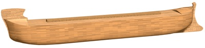
Image instructions. Click image to enlarge. The larger image can be dragged on its title bar, to allow viewing on screens less than 1280 pixels wide.
Considering the short and uninterrupted history from Noah's Ark to the Tower of Babel, it would be logical to assume the most ancient things bear some resemblance to what went on immediately after the flood. Several things about ancient ships are striking. By far the most obvious is the prominent stem, often at both bow and stern, not always with any clear reason or explanation. Another surprise is the extensive (almost universal) method of plank-first construction, proving that planking was treated as a structural element much more so than it was in the carval hulls of (much) later European shipbuilding, where strength was in the frame. These two dominant themes might easily be derived from Noah, so we make use of them here: Structural planking and prominent stems.
Broach avoidance using area center shift. In the image below, the wind travels from right to left. The bow mounted wind obstruction (1) (reminiscent of many ancient ships) steers the bow away from the wind. The projecting stern (5) resists sway in the water. This might be a similar concept to the waterline projection from the stern of Aegean vessels that have puzzled many1, since this appendage predated the use of the battering ram by centuries, and it was not at the bow. The keel thickens towards the stern which helps to shift lateral the center of water pressure aft.
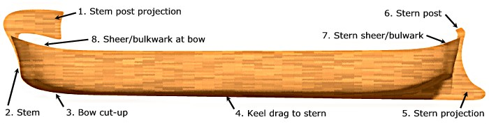
General Arrangement for broaching avoidance. Bow is on left, stern on the right.
The rise of the stern post (6) or stern stem here is arbitrary - to give an ancient look without providing competing wind area with the bow. The shape of the stem post projection (1) can also be modified - this particular image looking a little "Greek".
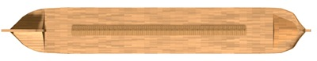
Plan view. (Click image to enlarge).
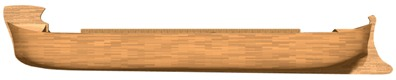
Side profile. (Click image to enlarge).
Roof view. (Click image to enlarge). Bow projection blending into roof of ventilation housing. The roof is cambered. The skylight hatch extends across all bulkheads except the extreme ends.
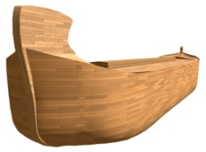
Bow view. (Click image to enlarge). Modified Bow projection with integrated ventilation window facing astern.
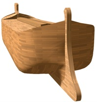
Stern view. (Click image to enlarge). Submerged stern projection exaggerated by perspective.
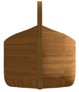
End view of bow. (Click image to enlarge). Slight swell on sides (hydrostatically trivial) possibly finishing in a blended lip at roof junction.
Earlier concepts illustrating some variations.
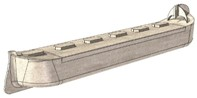
(Click image to enlarge). Individual hatches.
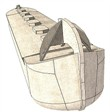
(Click image to enlarge). Extended bow appendage clear of the roof. Buttress walls also act as "sails", supplying wind force to help maintain forward motion.
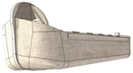
(Click image to enlarge). Looking up at the bow.
Links to background information sorted by design constraints:
1. Follow the Biblical description, interpreting obscure passages with care, and ignoring JEPD influence.Does Ark mean Box? , Window , Door , Noah's cubit
2. Optimize seakeeping and avoid broaching in a wind driven sea.
Broaching: Broach Avoidance , Wave Yaw and Broaching Action , Bow "sail'
Model Testing: Sea trials part 3 and part 4 ,
19th Cent wood ship basis: Allen Magnuson's design
Seakeeping of proportions: Hong paper, Long Hull?
3. Ensure adequate hull strength and structural integrity.
Necessary Strength: Wave Bending Moment
Structural issues: Gopher wood , Joining , Monocoque hull , Truss vs Monocoque
4. Permit high roll stability using suitable transverse section.
Static Roll stability , Calculator
5. Allow for abnormal ship loads - launching and beaching, debris in water, large waves etc.
Launch , Launch Options , Waves
6. Maximize internal volume in line with its role as a cargo vessel.
7. Permit construction in wood using limited technology, and minimal use of metal.
8. Provide an acceptable environment; ventilation, lighting, access etc
9. Combine elements from various ship-building eras, especially ancient concepts and flood stories.
10. Avoid an association to one particular identity or historical ship style.
11. Include features that help make it recognizable as Noah's Ark, where possible.
1. Casson, L., Ships and Seamanship in the Ancient World, Princeton Univ Press, NJ, 1971. Excerpt from p31:
"Needlelike projection at water level", and p33 "the stern was given an appendage (...). This last feature is a puzzle, whose solution will have to wait until more evidence turns up. With the passage of time (...), both ends came to be rounded".
This does not explain what the projecting stern was used for, but it makes it very clear that it had nothing to do with a ramming bow. Unlike the design of the Greek Trireme, the earlier Aegean vessels had a mysterious stern mounted projection. Later ship designs 'came to be rounded" at the ends, a step away from the Trireme. Hence, there is an historical precedent for a submerged form of projection independent of the Greek-style ram. One possible answer to the mystery could be in storm seakeeping. Return to text
(Large image links for old browsers, in same order as page images)
NARK-009.jpg
NARK-003.jpg
NARK-008.jpg
NARK-006.jpg
NARK-004.jpg
NARK-007.jpg
NARK-005.jpg
tn_oldNark-002.jpg
tn_oldNark-001.jpg
tn_oldNark-003.jpg
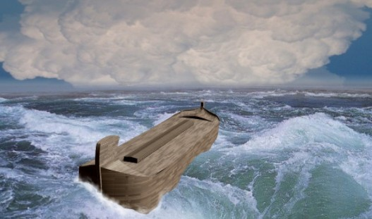
150 days are over, now the wind starts. In the distance the collapsing plume of a giant geyser a 100 miles (160km) away. (Chronology Barrick & Sigler, 5th Int. Conf. on Creationism 2003). It's a rush job, but I like the idea of the picture.